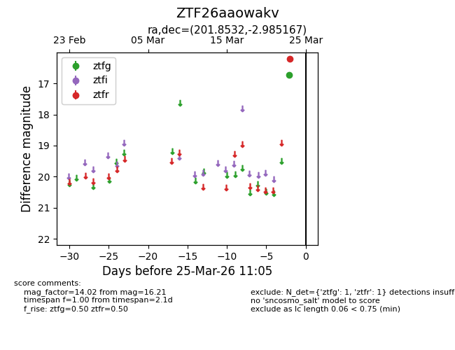
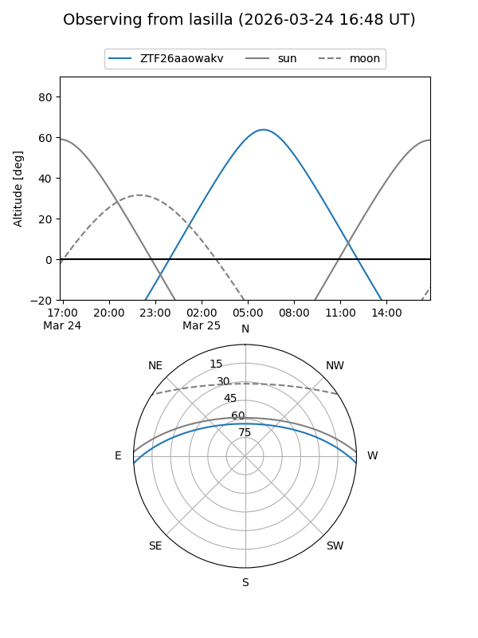
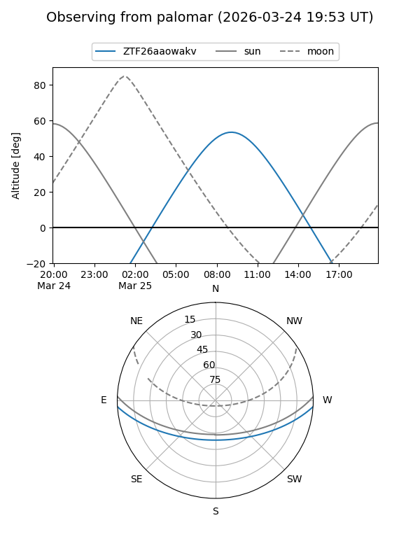

ZTF26aaowakv
Target ZTF26aaowakv at 2026-03-25 11:08
Aliases and brokers:
FINK: link
Lasair: link
ALeRCE: link
alt names
ZTF26aaowakv (ztf,fink_ztf)
Coordinates:
equatorial (ra, dec) = 201.8532,-2.98517
equatorial (HMS+DMS) = 13:27:24.77,-02:59:06.60
galactic (l, b) = (320.3993,+58.66120)
Flags:
Photometry:
last ztfg=16.73, ztfr=16.21
1 ztfg, 1 ztfr detections
Lightcurve

Visibility


Additional plots